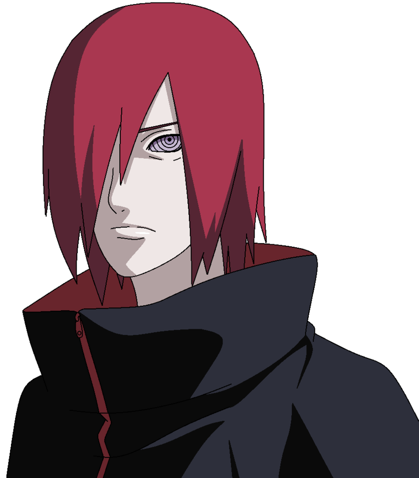
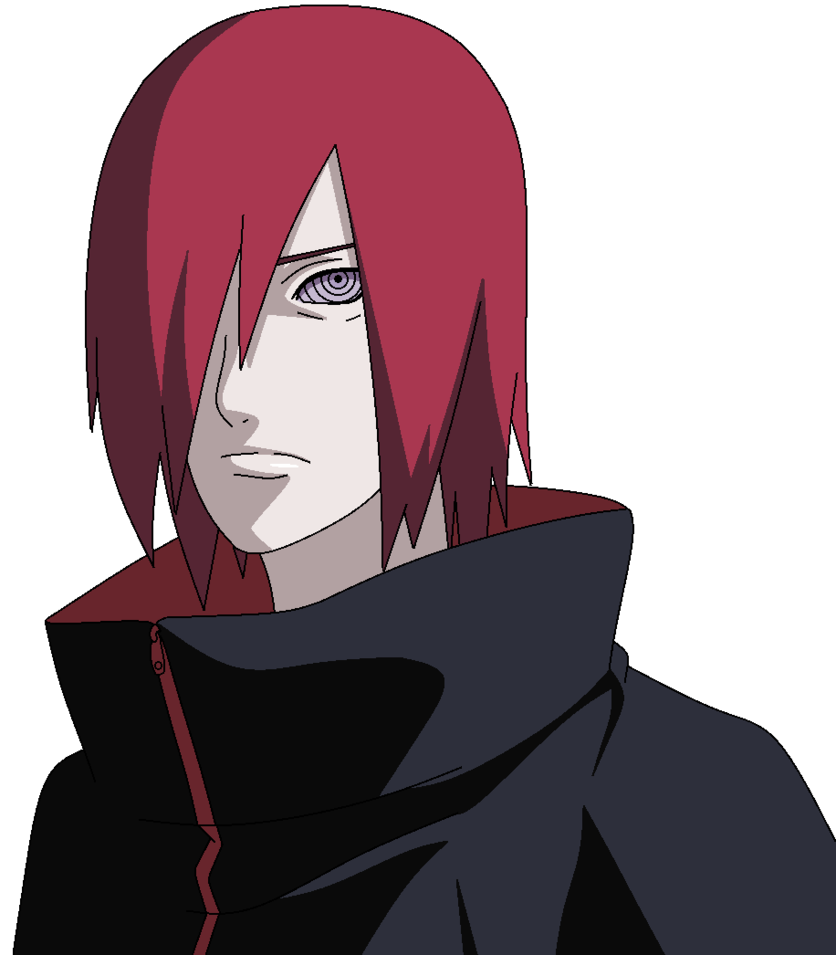

Obito is a good villain, and part of me wonders if his plan was really so evil. My only problem is that in the end, he wants to ignore the worlds problems instead of face them, so I cant get behind Obito as much as I can Pain. Pains abilities make him interesting in a fight, and his personality makes him interesting to listen to. Hes a lot like Obito, but with less angst and a more realistic plan. It makes a lot more sense that Naruto couldve talked Pain out of his plan than Obito. Obito wanted a specific way to achieve peace, while Pain just wanted peace with any method.
Villains, at their best, add weight and tension to the storyline. The best opponents seem powerful but beatable. By having a strong villain with a potential weakness, writers are able to build pressure as the protagonist works to defeat them. So, when Naruto battles Nagato the same effect happens. Nagato is a sympathetic villain. His motivations are comprehensible, and his plan is evil enough to be worrisome. His development and backstory made him the perfect enemy for Naruto to defeat. Plus, having Naruto vanquish Nagato bolstered the main character. The village realizes Narutos strength when he defeats Nagato, and this villain helps Naruto move along the path towards Hokage
I don't think Pain's goal is to make it that people would stop acting phony. Pain just wants to stop wars. Pain only thinks the villages are wrong for trying to be the best at war (so they don't die as much) when it would be much better for everyone if wars were just stopped. In his late Akatsuki idealogy, he doesn't think people will band together to stop war. Pain is simply going to use his destructive capabilities through the tailed beasts to make the villages submit and seize warfare. No active cooperation is being made. It is coercion. Pain wants to avoid suffering and thinks the deaths at his hand will save a vastly superior number of lives that would be lost in the inevitable next Great Ninja War. Pain merely questions the notion that countries can realistically draw a permanent seize fire without a trigger like himself. Pain believes in objective morality.